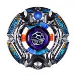

Bandid Genbull F230TB
| Bandid Genbull F230TB | |
|  | |
| Number: | BBG-23 |
|---|---|
| System: | Beyblade Zero-G |
| Type: | Stamina |
| Element: | Earth |
Contents
Note: Hasbro renamed this Beyblade Bandit Genbu F230TB.
Stone Face: Genbull
- Weight: 1.2 grams
The sticker on this Stone Face represents a comical illustration of a turtle shell with an eye peering from the hole. Genbull is based on Genbu, or Xuan Wu, the black tortoise with a snake coiling around it in Chinese mythology.
Chrome Wheel: Genbull
- Weight: 30.8 grams
Sat atop a very circular base is a mostly hexagonal shape. Four straight lines, two on each side, create a design reminiscent of the Libra Wheel. Another mostly straight edge is built at the top of the Genbull Chrome Wheel, where the Crystal Wheel's orb is inserted. At the bottom, however, there is a small turtle head designed but it does not protrude that much from the overall circular shape of the real bottom of this Chrome Wheel.
Having a distal center of gravity, an overall above-average weight, a rather even weight distribution for a Chrome Wheel, and a relatively symmetrical, circular, smooth shape, Genbull has shown serious competitive use in Stamina customizations in both the Attack Type Beystadium and the Zero-G Attack Type Stadium when used with the TB and CS Bottoms and the TH170/SR200 Tracks (benefiting from TH170/SR200's optimal center of gravity), and possesses considerable defensive potential in tall/mid-height customizations as well.
Genbull's great weight and shape render it superior in the face of other competitive Stamina Metal Wheels such as Duo when used in a Zero-G Attack Type Stadium, for the sake of resisting Zero-G Attack types. Chrome Wheel combinations such as Killerken Genbull and Genbull Genbull dominate the Zero-G metagame where Stamina types are concerned due to the reasons stated above.
This Chrome Wheel's heavy weight, smooth outer edge, and inward focused center of gravity render it a very viable choice for mid-height defensive customizations as well, even out-performing Revizer in some instances. However, Genbull has considerable Recoil from below, and as such would not be an effective selection for the bottom Chrome Wheel on an E230-based defenders.
When used as the top Chrome Wheel in a Synchrom
Genbull can provide very impressive Stamina when used as the top Chrome Wheel in a Synchrom, as well as noticeable defensive properties.
It has notable Stamina when paired with the Chrome Wheels Killerken and Reviser, and can also be utilized in many Defense customs with either of them to provide a boost in Stamina, and as such is very competitive in terms of Stamina/Defense when used as the top Chrome Wheel in a Synchrom.
When used as the bottom Chrome Wheel in a Synchrom
Due to its ideal weight distribution and shape, Genbull can provide a minor boost in Spin Velocity when used as the bottom wheel of a Synchrom, but there is no real competitive use for it outside of spin equalization. Genbull can perform considerably better when used as the top Chrome Wheel in a Synchrom or when in Synchrom with another Genbull in conventional Stamina/Defense customizations.
However, the one case where Genbull has shown incredible competitive ability is when used as the bottom Chrome Wheel in Dragooon Spin-Equalizers. Its low Recoil and high Stamina capabilities make it an optimal choice when using a Dragooon Spin-Equalizer, and Genbull has become top-tier in many Dragooon-based customs. Its circular shape barely protrudes over the attack points of the above Chrome Wheel, and its weights is added evenly around the circumference of the Synchrom.
When used in Synchrom with another Genbull
Genbull is an extremely successful Stamina Chrome Wheel when two are used in a Synchrom. Genbull Genbull has found many uses in Stamina throughout the BB-10 Attack Type BeyStadium and Zero-G Attack Type Stadium metagames, and can also be utilized effectively in mid-height defensive customs and even in Balance. This Chrome Wheel can be an extremely effective tool when paired with the right parts, and as such, has been one of the most competitively useful Chrome Wheels to be released.
Use in Stamina Customization
For the various reasons stated in the above paragraphs, Genbull can be utilized to extreme effect in the following Stamina customizations both in the BB-10 Attack Type Beystadium and the Zero-G Attack Type Stadium:
Genbull Genbull SR200TB/CS
Genbull Genbull TH170TB
Genbull Genbull SA165TB/CS
Use in Spin-Equalization customization
Genbull, due to its circular shape and its weight, can be utilized very effectively in the following Spin-Equalization and Tornado Staller customs that are top-tier in all competitive stadiums:
(MSF(-H/L/M)) Genbull Dragooon F230CF/GCF
(MSF-H) Genbull Dragooon SA165EWD/BWD (Normal Mode)
Genbull Dragooon T125GCF
MSF-H Genbull Genbull F230CF/GCF'
Exclusively for Zero-G, the Genbull Chrome Wheel is useful in the following Spin Equalizer:
MSF-H Genbull Dragooon B:D
Crystal Wheel: Bandid
- Weight: 4.8 grams
A clear derivative of a "bandit", Bandid oddly does not have a design reminiscent of those characters. It vaguely illustrates some longer daggers, but it mostly complements Goreim's shape entirely: like the latter, this Crystal Wheel has block shapes with ridges in them. Its original color is green, however Bandid Genbull's release is navy blue.
As all Crystal Wheels in the Standard or Zero-G format, Bandid is heavily outclassed by the whole Synchrom possibility, and even by Metal Wheels from the Maximum Series and the 4D System. Even in the Limited Format, where it has an opportunity to be useful, other Crystal Wheels are preferred, especially Dark Knight and some heavier Crystal Wheels. Bandid should never be considered for competitive play.
Track: Free 230
- Weight: 4.6 grams
This Track's gimmick is that it is completely free-spinning. It is implied in its marketing that it can make the Wheel it is attached to rotate in the opposite direction to the one it was launched in, simply after a hit with another Beyblade of the same original spin. However, in practice this would both be impossible, and, due to the fact the Beyblade would momentarily be stationary as it changed directions, result in an automatic loss. F230's core section is larger than regular Tracks such as 145 and 230 to accommodate the free-spinning mechanism, while the end of the Track bears a much larger version of the irregular structure used for the base of most Bottoms. This change in size allows a Blader to grip and stabilize part of the Track in order to securely screw a Bottom onto F230's end, which would otherwise be complex because of its free-spinning nature.
The F230 Track, although shown to be outclassed by 230 in terms of conventional stamina customizations, has shown startling potential in the field of spin-equalization when used with large and circular Bottoms like CF/GCF that make it remain upright and roll. The free-spinning shaft of F230 allows the combination using it to continue rotating after it has fallen onto the wide ridge of CF/GCF, which keeps the Metal/Chrome Wheel from touching the ground as the upper section of the Beyblade spins, providing a very prominent display of LAD capabilities.
The F230CF/GCF setup has proven to contain some of, if not the, highest Life After Death of any Track-Bottom setup ever in the Metal Fight Beyblade series, and as such is extremely useful in spin-equalizing customizations in both BB-10 or Zero-G format.
IMPORTANT: Mold Variations
TAKARA-TOMY released this Track in two different Beyblades, one of which was Bandid Genbull F230TB (orange). The second version of the track was released with Thief Saramanda F230SF (brown) in the BBG-26 Random Booster vol. 3. Hasbro also released this Track in the Behemoth Golem Earth Synchrom 2-Pack, with Berserker Behemoth F230TB (red), and in the Bandit Genbu F230TB Starter (orange).
The brown and red F230 Tracks, along with Hasbro's orange F230 have shown problems with wear, and the free-spinning function of the track seems to be hindered, squeaking and scraping, as opposed to the smooth, consistent free-spinning function of the Takara Tomy orange F230, which works very well when applied to spin-equalization. The worse of the four molds is Hasbro's red F230, whose internal mechanism appears to grind against itself, which means it almost requires an outside force to spin.
Use in Spin-Equalization customization
The F230 track, for the reasons stated above, can be utilized in the following spin-equalizing customizations if it is the TAKARA-TOMY orange mold.
Genbull Dragooon F230CF/GCF
Duo Cygnus/Cancer F230CF/GCF
Genbull Genbull F230CF/GCF
Bottom: Twin Ball
- Weight: 0.7 grams
TB is simply half of a sphere with a protruding ball at its tip identical in diameter to the tip of B.
TB has found potential in Stamina customizations in both the BB-10 Attack Type BeyStadium and the Zero-G Attack Type Stadium. Its slightly aggressive movement pattern and increased amount of friction with the stadium floor as opposed to D-series Bottoms allow it to resist rotational Recoil more effectively than other conventional Stamina Bottoms. Due to its spherical shape, TB also has an unusual ability to wobble at extreme angles for an extended period of time when used on taller Tracks (specifically 230, where this attribute can be utilized to its fullest), similar to MB, although arguably even more effectively, as the period of time for which it can precess is typically longer than MB's precession time. TB is preferred over most Bottoms for Stamina against opponents using the same spin in Zero-G stadiums due to its impressive ability to resist Zero-G Attack types, something which other popular Zero-G stamina bottoms such as BWD/W²D cannot do.
TB can be utilized very effectively when used with SR200, TH170, or 230, allowing it to wobble at a wide angle and take advantage of the optimal center of gravity such heights provide to that Bottom's balance which makes it wobble later, depending on the Wheel(s) used. It also performs notably well when used with the Genbull Chrome Wheel, using its weight and its movement pattern/resistance to rotational Recoil to reduce the opponent's spin velocity by repeatedly inflicting rotational damage.
However, unlike WD or EWD, TB is relatively vulnerable to opposite-spin customizations due to its rounded shape, and one should avoid using it in an opposite-spin match-up whenever possible, as Stamina setups like W145WD are a safer pick in such a scenario to remain upright.
Despite this fact, as shown by its impressive numbers against same-spin opponents, TB is definitely a competitive Stamina part in any stadium format, and is an essential part to any Blader majoring in Stamina.
Use in Stamina customizations
TB, for the reasons stated above, can be utilized effectively in the following Stamina customizations.
Genbull Genbull SR200/TH170TB
Duo Cancer/Cygnus/Hades SA165/230/SR200TB
Use in Zero-G Defense customizations
With its ability to stay balanced and in place despite the swaying movement of the stadium caused by Zero-G Attack types, TB can be a core part of the following Zero-G Defense combos:
MSF-H Killerken Revizer E230 TB
MSF-H Revizer Revizer/Killerken/Genbull E230 TB
Other Versions
- Shinobi Genbull 130W²D - BBG-23 Random Booster Vol. 3 Bandid Genbull F230TB (Yellow and blue stickers)
Gallery
Overall
The Genbull Chrome Wheel and TB bottom are both must-have parts for bladers majoring in stamina, and F230 has extremely high LAD capabilities and serious potency when used with spin-equalizing setups. Almost every part on this Beyblade (with the exception of Bandid) is immensely competitive. Every seriously competitive Blader should own at least two of this Beyblade.